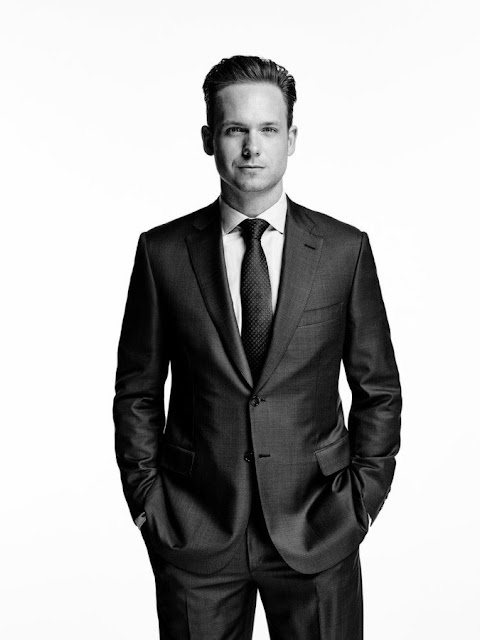

Nosotros
Este es nuestro equipo de abogados, quienes son grandes profesionales con las mejores referencias del ámbito.
Juan Perez
Juan Perez es un abogado nacido en la Ciudad Autónoma de Buenos Aires. Es ex-alumno de la Universidad de Buenos Aires, donde se graduó con promedio de 9,66 (siendo el más alto de su promoción), se especializa en Derecho Previcional. Es Doctor en Derecho Previcional (UBA), Master en "El Proceso Laboral y de la Seguridad Social" (UNLP) y es profesor titular de cátedra de la materia "Derecho del Trabajo y la Seguridad Social" (UBA).
Rodrigo Rodriguez
Rodrigo Rodriguez es un abogado proveniente de la ciudad de La Plata. Es un ex-alumno de la Universidad Nacional de La Plata, graduado con promedio 9 y especialista en Derecho Penal. Es Doctor en Derecho Penal (UNLP), Master en "Teoría General de la Prueba y los Medios Probatorios" (UNLP) y profesor titular de cátedra de la materia "Teoría de la Pena" (UCA)
Fernanda Fernandez
Fernanda Fernandez es una abogada oriunda de Córdoba (Capital). Ex-alumna egresada de la Universidad Nacional de Córdoba, recibida con promedio 10 y especialista en Derecho Civil. Es Doctora en Derecho Civil (UNC), Master en "Derecho de la Vejez" (UNC) y profesora titular de cátedra de la materia "Sociedades Civiles y Comerciales" (UBA).